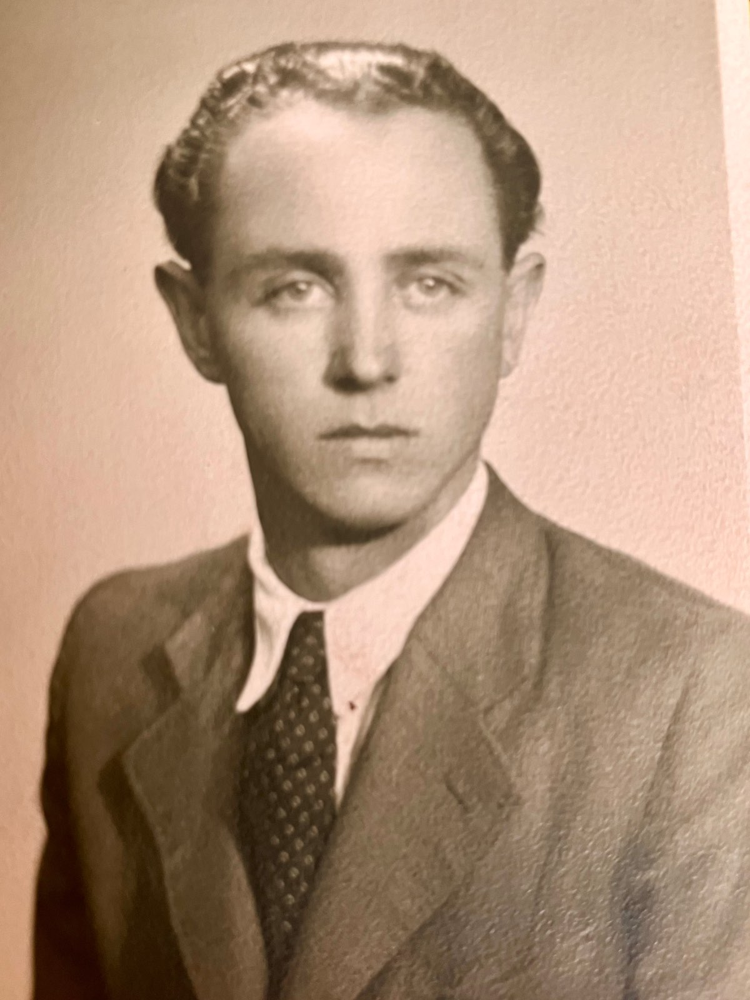
1919 – 1995
Život
Jan Slavík se narodil v Bzenci jako nejstarší syn do rodiny účetního. Rodičům se později narodila ještě dcera Věra, ale matka Růžena velmi brzy zemřela. Otec Jakub se znovu oženil s dívkou, která v domě pracovala jako hospodyně a s ní měl ještě syny Jiřího a Miloše. Po skončení základní školy se Jan začal učit cukrářem ve Veselí nad Moravou. Po vyučení si to namířil do Brna, kde dostal místo v cukrárně U Sedláčka (dosud fungující cukrárna, dnes pod jménem Zemanova) v Josefské ulici.
Zde se seznámil s Františkou Wellnerovou, kterou si vzal za manželku. V roce 1942 se jim narodila dcera Věra, o dva roky později druhá dcera Jana. Válečné období bylo pro rodinu složité, Jan byl totálně nasazen nejprve v Štrasburgu a poté v letecké továrně Messerschmitt v rakouském Wiener Neustadt. Po bombardování továrny spojeneckým letectvem v závěru války z objektu utekl a už zůstal v Brně.
Po válce se rozhodl postavit na vlastní nohy. Za finanční pomoci příbuzných si pronajal prostory a zařídil cukrářskou výrobnu v Rajhradě. Místo nebylo zvoleno náhodou, benediktinský klášter v Rajhradě a jeho návštěvníci byli velkými odběrateli cukrářských výrobků. Tvrdě pracoval, aby ušetřil čas za cesty do Brna, spával v cukrárně na stole. Podniku se dařilo, Jan splácel příbuzným půjčku. Příběh bohužel neměl happyend. Po nástupu komunistů v roce 1948 byla výrobna uzavřena a stroje zabaveny. Ještě mnoho let pak tyto stroje rezavěly bez jakéhokoliv využití na dvoře domu.
Nesplacená část úvěru ovšem Janovi zůstala. Proto musel nastoupit počátkem 50.let 20. století jako horník do dolů v Žeravicích. Později se vrátil do Brna, kde pracoval jako dělník v provozovně Sběrných surovin společně s manželkou. Poté přešel do sběrny surovin v Králově Poli a až do 70. let 20. století pracoval jako vedoucí provozu Sběrných surovin na Malé Klajdovce.
Následně nastoupil k podniku GeoTest a na různých moravských lokalitách dozoroval čerpání vodních vrtů. V obytné maringotce strávil s manželkou Františkou na příslušné lokalitě vždy několik měsíců a poté se přestěhoval na nové místo. Tento kočovný život mu zřejmě vyhovoval, u hydrologů pracoval až do 90. let 20. století.
Záliby a zajímavosti
Přestože se profesionálně k cukrářskému řemeslu nikdy nevrátil, doma pekl často a rád. Jeho mistrovským kouskem byly piškotové rolády. Piškotové těsto přitom pekl na novinovém papíru (pečicí papír byl tehdy nedostupný) a vždy se chlubil tím, že po upečení v troubě a sloupnutí upečeného těsta se noviny daly pohodlně přečíst. Byl náruživým čtenářem, knihovnu měl plnou české i zahraniční klasické literatury. S manželkou Františkou rádi navštěvovali Luhačovice nebo Mariánské Lázně.
Fotografie
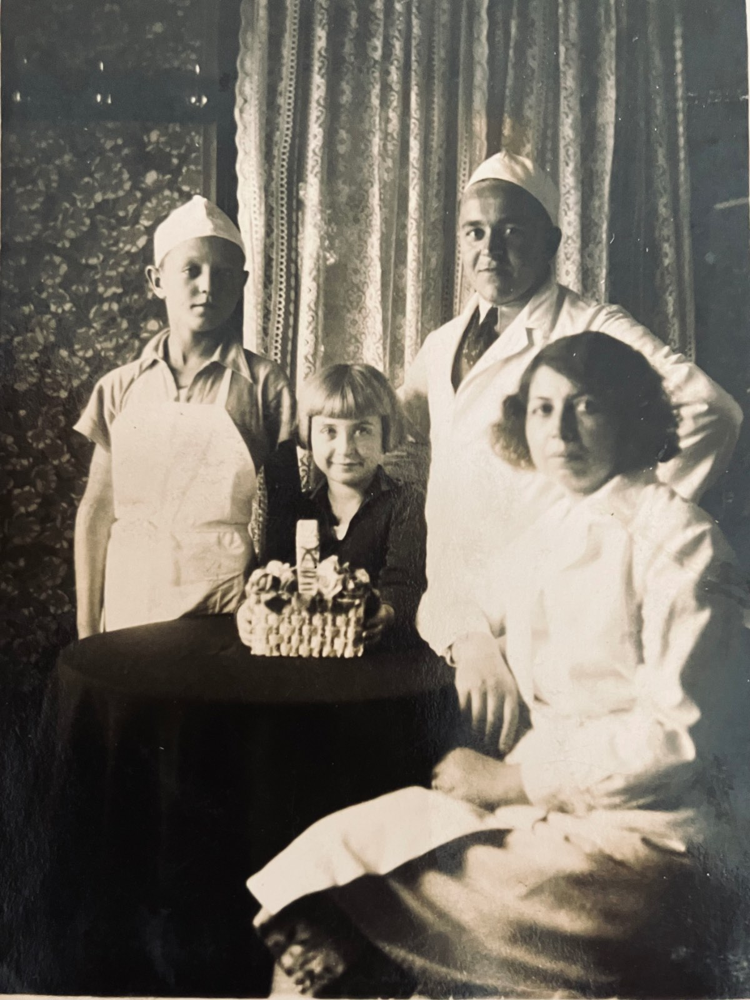
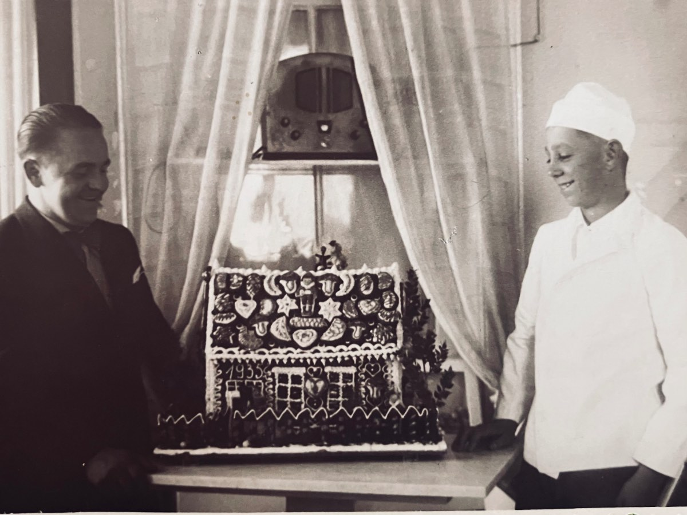
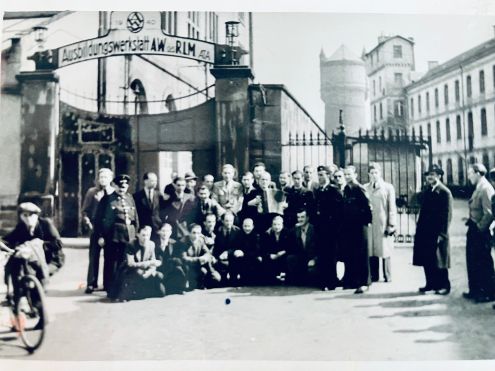
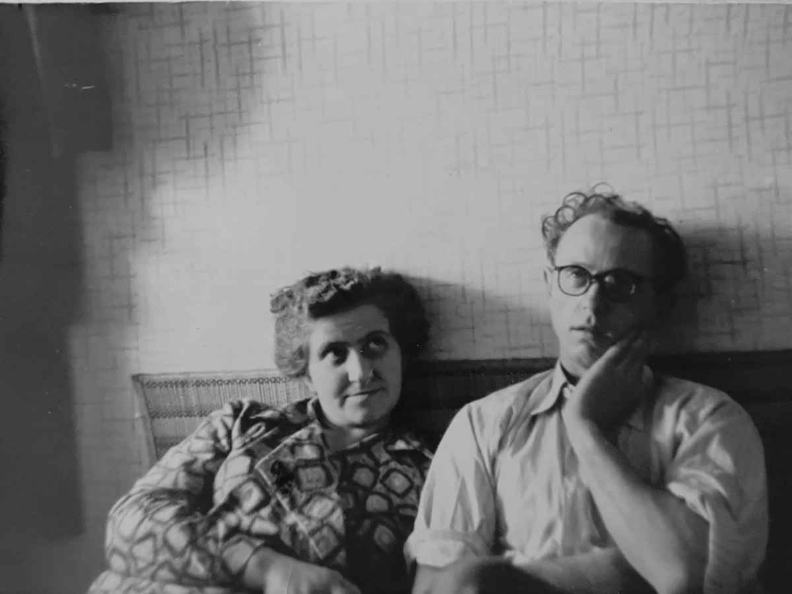
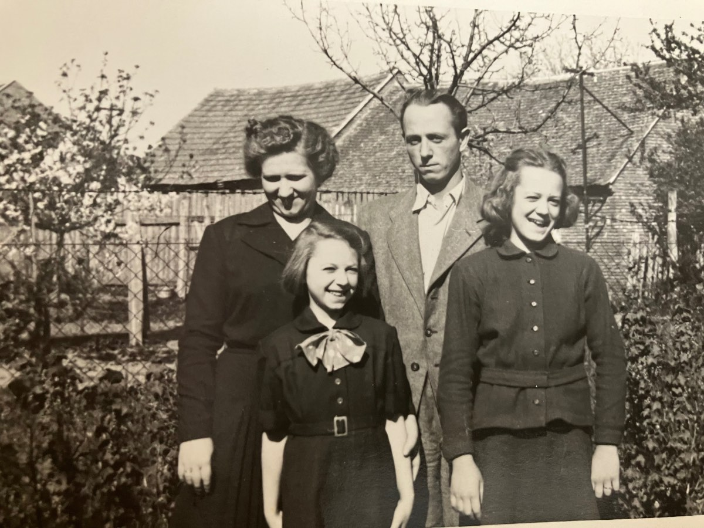
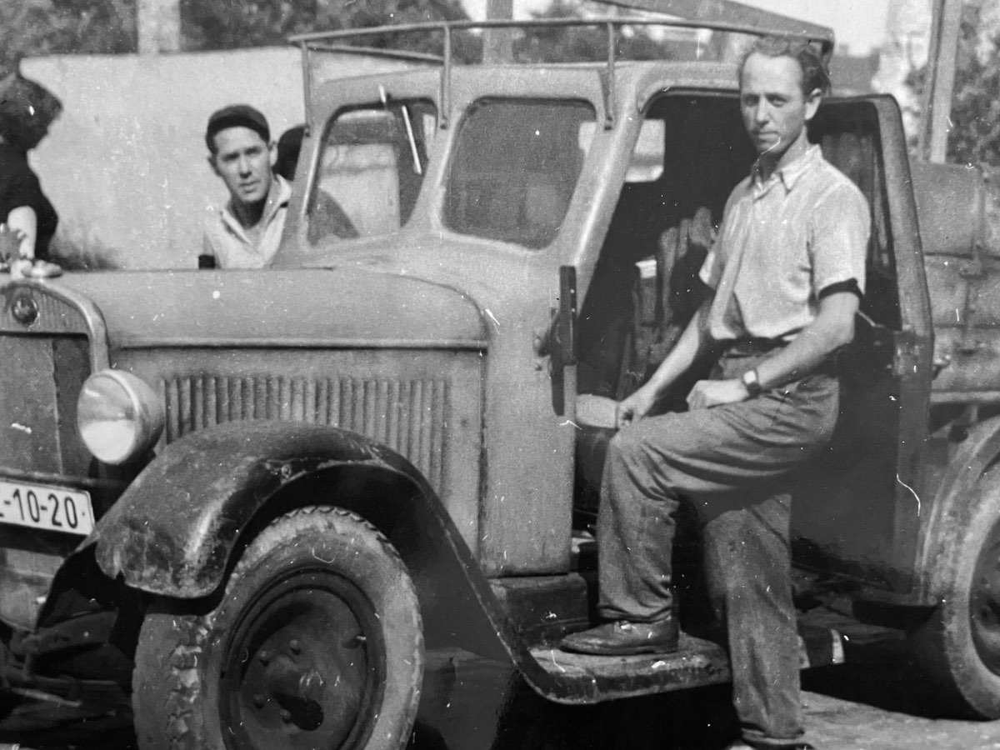
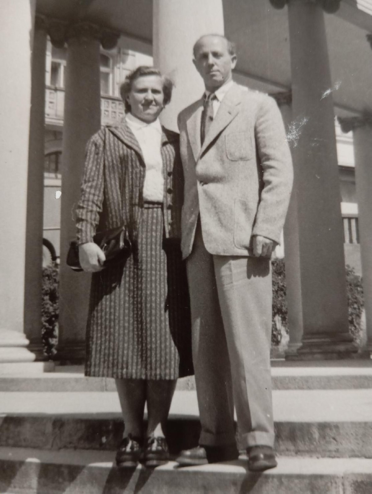
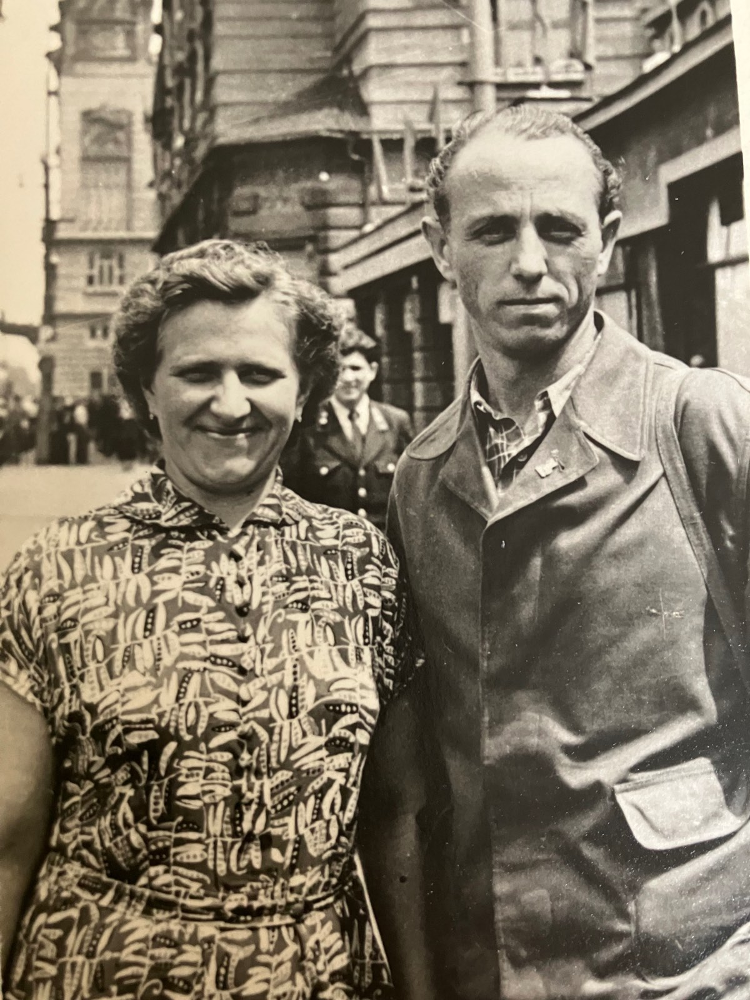
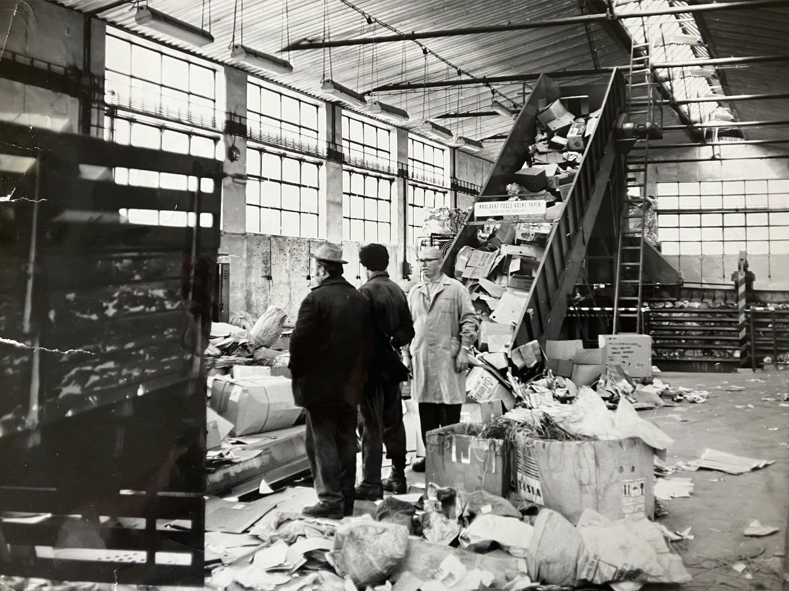
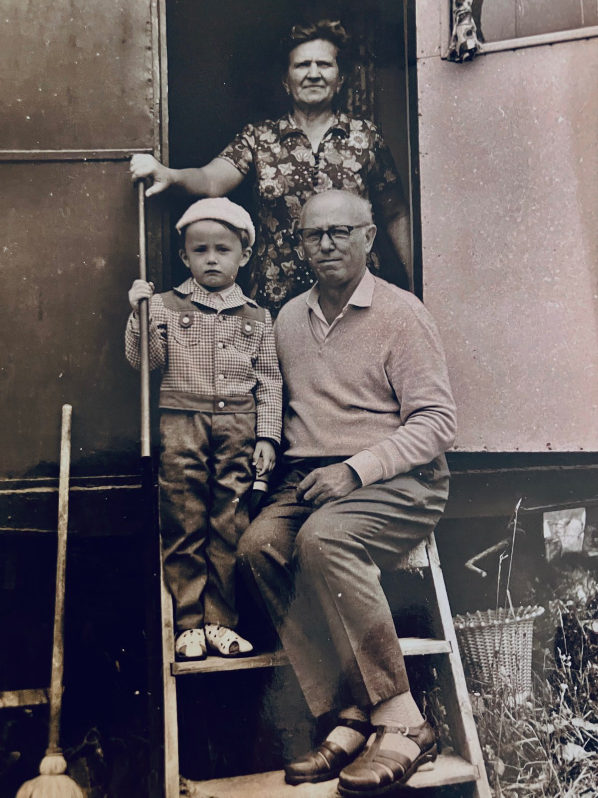
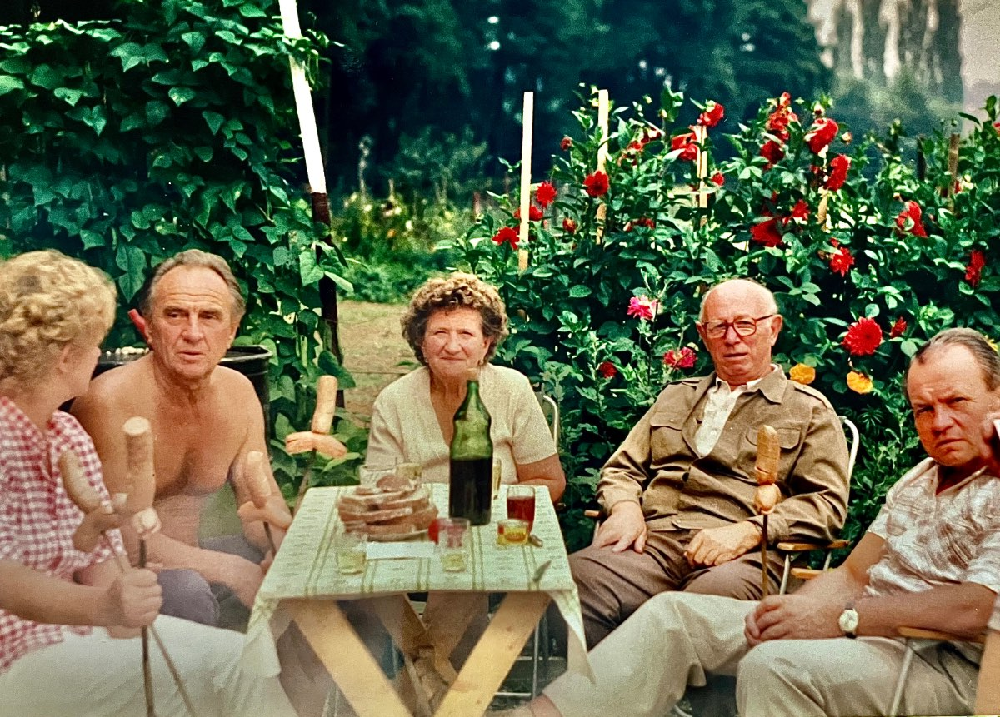
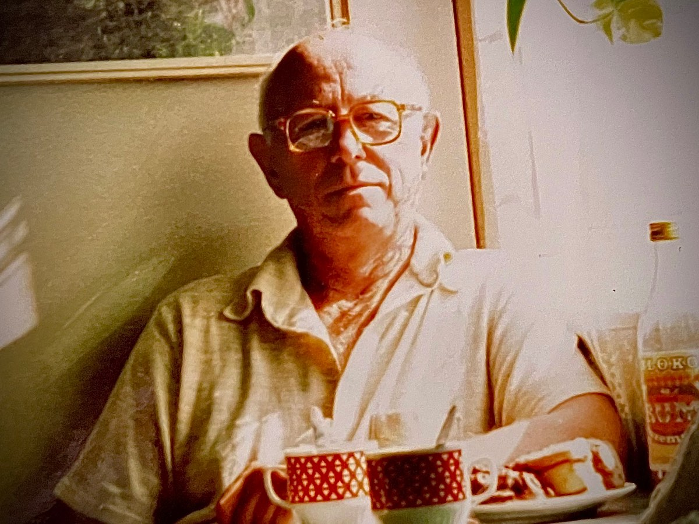
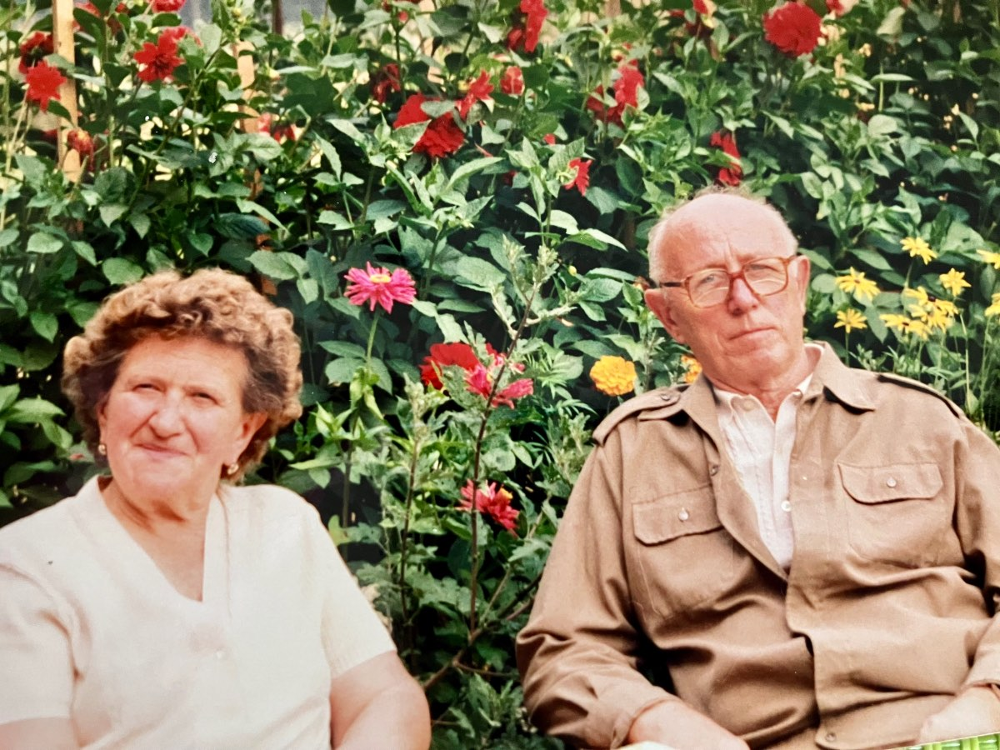